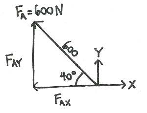
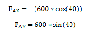
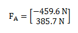
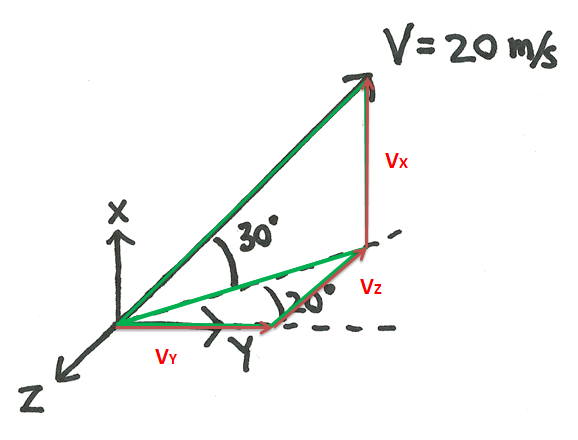
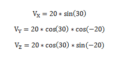
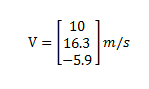

Vector Decomposition
Every vector can be thought of as the sum of some other vectors that when added have the same direction and magnitude. As seen on the right, the blue vector is equal to the sum of the two red vectors. Vector decomposition is the process of breaking one vector into two or more parts that add up to the original vector. Again looking at the picture on the right, we can say that we decomposed the blue vector into the two red vectors.
The most useful way to decompose vectors is to break a vector into components that line up with the coordinate axes. A vector in a 2-D plane is broken up into an X component and a Y component. The X component has some magnitude in the direction of the positive X axis and the Y component has some magnitude in the direction of the positive Y axis. A vector in 3-D space will have three components, an X component, a Y component and a Z component. The image below shows a 2-D and a 3-D vector in blue and the corresponding components of the vector in red.
When decomposing a vector into X, Y and Z components, you will need to solve for the magnitude of each component. To do this you will need to know the magnitude of the original vector and you will need to know the direction (one angle for a 2-D vector and two angles for a 3-D vector). If you have this information you can use trigonometry to solve for the magnitudes of the components. Below are the formulas for the magnitudes of the X, Y, and Z components of the vectors shown above. Be cautioned though, these equations will only work if the angles are measured in exactly the same way as in the diagrams.
A vector can be represented as either a magnitude and direction, or it can be represented in component form. In component form, the vector is listed with three values representing the magnitudes of the X, Y and Z components of the vector. For 2-D vectors, the Z component (which will always equal zero) is often omitted.
Worked Problems
Worked Problem 1:
Write the following vector in component form.
| Work | Comments |
|  |
First we draw in the two component vectors. The two components and the original vector form a right triangle that we can use to solve for the magnitude of the two component vectors. |
|  |
We next use simple sine and cosine relationships to form equations for the magnitudes of the two component vectors. The X component is negative because it goes in the opposite direction of the positive X axis. |
|  |
The last step is to write out the vector in component form. |
Worked Problem 2:
Write the following vector in component form.
| Work | Comments |
|  |
First we draw in the three component vectors (drawn in red). The components can be used to draw in two right triangles (outlined in green). We can use these right triangles to solve for the magnitude of the components. |
|  |
We next use simple sine and cosine relationships to form equations for the magnitudes of the three component vectors. |
|  |
We then solve the equations and put the solution in vector form. |
 |
| Author: Jacob Moore has liscenced this work under a Creative Commons Attribution-NonCommercial 3.0 Unported License. |